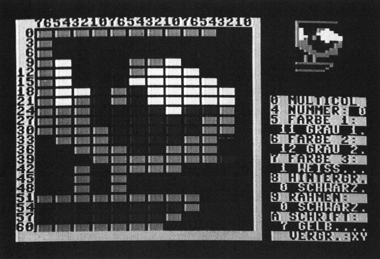
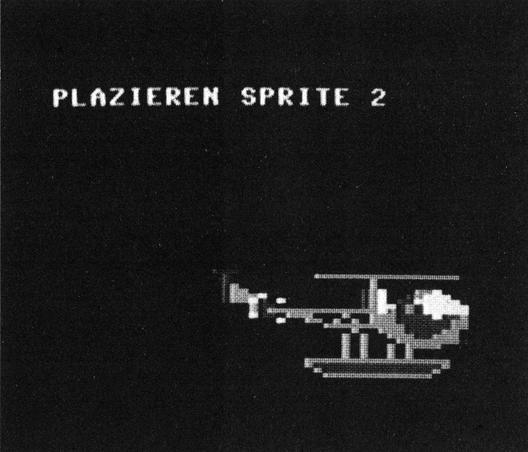

Sprites: Die Bewegung macht's
Um anspruchsvolle Actionspiele zu schreiben, sind bewegte Sprites unerläßlich. Das »Sprite Construction Set« ist beim Erstellen von Sprites mit Bewegungsabläufen eine wertvolle Hilfe.

Klar, daß man heutzutage Sprites nicht mehr »von Hand« programmiert. Doch die wenigsten Sprite-Editoren besitzen die Möglichkeit, Bewegungsabläufe auszutesten und daran »herumzufeilen«. Mit dem »Sprite Construction Set«, im folgenden kurz »S.C.S.« genannt, können Sie mühelos die gesamte Sprite-Animation Ihrer Spiele entwerfen.
Kein Papierkram, keine Entwurfsblätter. Konzentrieren Sie sich ganz auf die künstlerische Gestaltung.
S.C.S. besteht aus 3 Teilen:
— dem Lader »S.C.S. BOOT« (Listing 1)
— dem Basic-Hauptprogramm »S.C.S.« (Listing 2)
— und dem Assemblerpaket »S.C.S.OBJ.« (Listing 3)
Der Lader wird mit »,8« geladen und mit RUN gestartet. Er lädt das Maschinenprogramm und verschiebt den Basic-Start um eine Seite = 256 Byte nach oben, um 4 weiteren Sprites Platz zu machen. Die Daten für die 8 Sprites liegen jetzt in den Blöcken 11, 13, 14, 15, 32, 33, 34 und 35. Nach dem Ladevorgang erscheint auf dem Bildschirm unter anderem ein grüner Rahmen mit Zahlenreihen links und oben. Er umrahmt das Feld für die 8fach-Vergrößerung des aktuellen Sprite. Innerhalb des Rahmens blinkt ein kleiner Cursor in Form eines »+«. Die Zahlenreihen hängen mit dem Aufbau des Sprite zusammen und dienen zur Orientierung. Auf der rechten Bildschirmseite erscheint eine Parameteranzeige. Man verstellt die Parameter, indem man die Zahlentaste drückt, die links vor dem jeweiligen Display steht. Alle Tasten haben Dauerfunktion.
| Taste | Funktion |
|---|---|
| 0 | schaltet von Normal- in Multicolor(MC-)Modus um und umgekehrt. |
| 4 | schaltet einen Sprite weiter (von 0 bis 7, dann wieder nach 0) |
| 5 | schaltet Spritefarbe 1 um eins weiter (von 0 bis 15, dann wieder nach 0) |
| 6 | wie 5, aber Farbe 2 |
| 7 | wie 6, aber Farbe 3 |
| 8 | schaltet Hintergrundfarbe jeweils um eins weiter |
| 9 | wie 8, aber Rahmenfarbe |
| A | wie 8, aber Schriftfarbe |
| X | vergrößert Sprite in X-Richtung, beziehungsweise schaltet zurück. |
| Y | Wie X, jedoch Y-Richtung. |
Farben 1 und 3 sind die beiden Multicolor-Farben. Sie tauchen nur im MC-Modus auf und sind für alle 8 Sprites gleich (Hardwarebedingung). Farbe 2 kommt sowohl im Multicolor- als auch im Normal-Modus vor und ist für jeden der 8 Sprites individuell wählbar. Im Normal-Modus stellt sie die ausschließliche Zeichenfarbe dar.
Der Cursor wird mit Joystick Port 2 innerhalb des Rahmens gesteuert. Mit <-> schaltet man auf Punkt löschen, mit <+> zurück auf Punkt setzen. Gelöscht oder gezeichnet wird aber nur, wenn der Knopf am Joystick gedrückt ist. Das Sprite wird natürlich nicht nur als 8fach-Vergrößerung, sondern auch im Original in der rechten oberen Bildschirmecke gezeigt.
Im Multicolor-Modus hat der Cursor eine andere Gestalt, da man hier nur die halbe Auflösung in X-Richtung, dafür aber 3 Zeichenfarben hat. Er ist doppelt so breit und zeigt an, mit welcher Farbe er gerade malt (1,2,3, oder <-> für Löschen). In den jeweiligen Modus schaltet man mit den Tasten <1>, <2>, <3> und <->.
Am besten, man probiert erstmal ein wenig herum, um das Zeichnen mit dem Joystick in den Griff zu bekommen.
Außerdem stehen eine ganze Reihe Befehle zur Verfügung, die teils einfache, teils sehr komplexe Operationen bewirken. Um einen Befehl eingeben zu können, muß man erst die CTRL-Taste drücken. Jetzt wird in der obersten Bildschirmzeile nach dem Befehl gefragt und ein Eingabecursor in Form eines Pfeils nach links erscheint. Nun kann man Befehlsworte und eventuell benötigte Parameter eingeben.
Einfache Befehle für...
Die Eingabe wird mit <RETURN> abgeschlossen. Ungültige Eingaben werden ignoriert. Hier eine Auflistung der Befehle und ihrer Wirkung:
| Befehl | Wirkung |
|---|---|
| CLEAR | löscht den aktuellen Sprite |
| SWAP | stellt ihn auf den Kopf |
| FLIP | spiegelt ihn |
| ROT | dreht ihn um 90 Grad im Uhrzeigersinn; die rechten 3 Reihen gehen dabei verloren, weil die Sprites ein Format von 24 x 21 Punkten haben. Dreht man einen Multicolor-Sprite, verfälscht sich zwangsläufig dessen Farbinformation, weil er in X- und Y-Richtung verschiedene Auflösung hat. |
| COPY X | (X=Parameter) Sprite Nummer X wird mit all seinen Informationen in den aktuellen Sprite kopiert; dient zur Sicherung. |
| XOR X | Sprite Nummer X wird mit dem aktuellen Sprite exklusiv- oder verknüpft. Das Ergebnis wird im aktuellen Sprite abgelegt. |
| OR X | wie XOR X, jedoch Oder-Verknüpfung |
| AND X | wie XOR X, jedoch Und-Verknüpfung |
| ROL | Jetzt kann man den Sprite mit dem Joystick im Definitionsfeld verschieben. Drückt man beim Verschieben den Knopf, dann gehen die aus dem Rahmen gehobenen Reihen verloren, sonst erscheinen sie auf der anderen Seite wieder. Diese Funktion ist im Zusammenhang mit OR X und COPY X von entscheidender Wichtigkeit. Zwei Sprites, die später ein Objekt bilden sollen, kann man mit COPY X in andere Bereiche sichern und sie anschließend so verschieben, daß man, wenn man sie mit OR X verknüpft, ausprobieren kann, ob die Nähte passen. Will man einen Sprite um 90 Grad drehen, ohne daß die rechten 3 Reihen verlorengehen, kann man ihn vorher entsprechend verschieben. In den Zeichenmodus zurück gelangt man durch <X>. |
| SEQ | ist ein Befehl, um Bewegungsabläufe mit nur einem Sprite zu testen. Zuerst wird nach der Sequenz gefragt. Jetzt kann man Ziffern von 0 bis 7 in beliebiger Reihenfolge eingeben. Jede der Ziffern entspricht einem der 8 Sprites. Bei der Eingabe reagiert S.C.S. interaktiv. Rechts oben und im Rahmen wird immer das der Ziffer entsprechende Sprite angezeigt. Schließt man die Eingabe der Sequenz mit <RETURN> ab, wird nach der Verzögerung gefragt. Man muß einen Wert von 0 bis 255 eingeben. Bei 0 läuft die Sequenz mit 14 bis 15 Bildern/s, bei 255 erscheint 1 Bild/s. Beim Sequenzdurchlauf werden die Sprites sowohl als 8fach-Vergrößerung als auch im Original dargestellt. Bei geeigneter Benutzung kann ein eleganter Film-Effekt entstehen. Auch hier entweicht man mit der <X>. |
| PUZZLE | Hier kann man Bewegungsabläufe mit bis zu 8 verschiedenen Sprites koordinieren. Nun wird der Bildschirm gelöscht und Sprite Nummer 0 erscheint. Man kann ihn mit dem Joystick plazieren. Auf Knopfdruck werden die Koordinaten akzeptiert und das nächste Sprite kann plaziert werden. Nach Sprite Nummer 7 kommt wieder Sprite Nummer 0 an die Reihe. Für den Bewegungsablauf werden später nur die Sprites verwendet, die momentan plaziert sind. Durch <X> verläßt man diese Funktion und kann nun die Sequenzen eingeben. Alle Sequenzen müssen genauso lang wie die von Sprite 0 sein, um angenommen zu werden. Auch hier reagiert S.C.S. interaktiv. Es werden alle Sprites genau in dem Sequenz-Stadium angezeigt, in dem das Sprite, für das gerade die Sequenz eingegeben wird, steht. Wenn sie den letzten plazierten Sprite erreicht haben, wird wieder bei Sprite Nummer 0 angefangen. Man kann so lange herumprobieren, bis alles stimmt. Auf erneuten Druck von <X> verläßt man diese Funktion, um die Bewegungsvorschriften einzugeben. Jetzt wird nach DELTA X und DELTA Y gefragt. Der Wertebereich liegt jeweils von -127 bis +128. Negativ bedeutet Bewegung nach links beziehungsweise oben, positiv nach rechts beziehungsweise unten um X- beziehungsweise Y-Schritte. 0 bedeutet keine Bewegung in der jeweiligen Richtung. DELTA X und DELTA Y gelten für die Bewegung aller plazierten Sprites. Nun fragt S.C.S. nach der Verzögerung. 0 ist am schnellsten, 255 am langsamsten. Hier muß man ausprobieren und Erfahrungswerte einsetzen. Zuletzt wird nach RATE gefragt. Gemeint ist, nach wieviel Bewegungsschritten eine Sequenz-Änderung für alle Sprites stattfindet. Dann wird der Bewegungsablauf gestartet. Wenn ein Sprite die zulässigen Koordinaten verläßt, kehren alle Sprites wieder an ihre Ursprungskoordinaten zurück. Durch <X> stoppt man den Bewegungsablauf und gelangt wieder in den Zeichenmodus. Limit für den Zeilenabstand ist 255. Hier wird vor den Filenamen automatisch ein »L.« gestellt. |
| SAVE ALL | Speichert ein File ab, das alle Informationen enthält, die für S.C.S. wichtig sind: die Daten aller Sprites, den gesamten VIC, die Nummer des aktuellen Sprites, Schriftfarbe, alle Sequenzen von PUZZLE und SEQ und die Koordinaten von PUZZLE. Will man die Arbeit mit S.C.S. unterbrechen, um später weiterzumachen, sollte man den aktuellen Stand durch SAVE ALL speichern. Vor den Filenamen wird automatisch ein »A.« gestellt. |
| LOAD ALL | lädt den gespeicherten Stand wieder. Man braucht das »A.« vor dem Filenamen nicht einzugeben. |
Natürlich kann man die Bewegungsabläufe von S.C.S. nicht in sein eigenes Programm übernehmen. Sie dienen nur zur Planung, da die Programmierung der Bewegungsabläufe fortgeschrittenen Programmierern vorbehalten ist, die sich mit der Architektur des VIC auskennen.
...komplexe Operationen
Und jetzt zu den Diskettenoperationen: Bei allen Diskettenoperationen wird automatisch der Fehlerkanal gelesen und die Directory angezeigt.
| CAT | zeigt Directory an. |
| DISK | sendet Disk-Befehle, zum Beispiel Formatieren: »N: Name, ID« und ähnliches. |
| SAVE | das Sprite wird mit all seinen dazugehörigen Daten gespeichert. Vor den Filenamen wird automatisch ein »S.« gestellt. |
| LOAD | lädt ein mit SAVE gespeichertes Sprite. Man braucht das »S.« vor dem Filenamen nicht extra eingeben, da es automatisch vor den Filenamen gestellt wird. |
| SAVE PRG | sichert nur die Blockdaten des aktuellen Sprite als Maschinenprogramm ab. Ein so gespeichertes File kann man nur mit »LOAD "Name",8,1« im Direktmodus oder von Basic aus wieder laden. Bei letzterem muß berücksichtigt werden, daß automatisch ein Start des Basic-Programms ausgeführt wird. Vor den Filenamen wird automatisch ein »P.« gestellt. Dieser Befehl ist interessant für Assembler-Anwender. |
| SAVE LDR | Hier wird direkt auf Diskette ein Basic-DATA-Lader des aktuellen Sprite generiert. Mit der Frage »BLOCK« ist gemeint, in welchem Sprite-Block das Programm die Sprite-Daten später POKEn soll. Anschließend wird nach Anfangszeilennummer und Schrittweite gefragt, vor allem, damit man das Programm später bequem mit anderen MERGEn kann. Bemerkenswerte Nebeneffekte: Wählt man als Schrittweite 0, ist das Programm zwar lauffähig, aber vor weiteren sinnvollen Eingriffen geschützt. Einen absoluten Schutz vor Basic-Laien erreicht man, indem man als Anfangszeilennummer eine Zahl zwischen 64000 und 65535 bei entsprechend geringer Schrittweite wählt. Man kann sogar einen Überlauf erreichen, so daß die Numerierung plötzlich wieder bei 0 anfängt. |
Sinnvolle Befehle, die Sie aus »S.C.S.OBJ« für eigene Programme verwenden können. AN ist die Startadresse 49152.
| SYS (AN+9) X | stellt Spriteblock X auf den Kopf. |
| SYS (AN+12) X | spiegelt ihn. Handelt es sich um ein MC-Sprite, muß man SYS (AN+15) X anfügen. |
| SYS (AN+21) X | dreht Spriteblock X um 90 Grad nach rechts. Nur für Normal-Sprites empfehlenswert. Die rechten drei Reihen gehen verloren. |
| SYS (AN+24)X,Y | rollt Block X nach links; ist Y=0, gehen die aus dem Block geschobenen Daten verloren, ist Y>0, erscheinen sie rechts wieder. |
| SYS (AN+27)X,Y | analog nach rechts |
| SYS (AN+30)X,Y | analog nach oben |
| SYS (AN+33)X,Y | analog nach unten |
| SYS (AN+36)X,Y | XORt Inhalt der Speicherzelle X mit dem 1-Byte-Wert Y |
| SYS (AN+39) X,Y,Z,"Text" | druckt Text mit Farbe Z an die Koordinaten X und Y |
| SYS (AN+51)N,X,Y | setzt Sprite Nummer N (0-7) an die Koordinaten X(0-360) und Y(0-255); Abdeckung des ganzen Bildschirmbereichs! |
| SYS (AN+57) | zeigt Directory an |
| SYS (AN+60)X | schaltet Schriftfarbe des ganzen Bildschirms auf X |
Hier muß man peinlichst darauf achten, keine falschen Parameter zu wählen, da das zum Programmabsturz führen kann.
Manche dieser Befehle können vor allem Anfängern helfen, die entworfenen Sprites im eigenen Programm erfolgreich einzusetzen. Außerdem sind die Befehle sehr schnell in der Ausführung.
Eine kleine Demonstration
Geben Sie das Programm »A.DEMO« (Listing 4) mit dem MSE ein, und laden Sie es von »S.C.S.« aus mit »LOAD ALL«.
Die acht Sprites, die jetzt geladen werden, sind Einzelteile eines großen Hubschraubers (Bild 1). Da alle Sequenzen mitgeladen werden, kann man den Hubschrauber durch »PUZZLE« über den Bildschirm fliegen lassen.

Wenn Sie »PUZZLE« eingegeben haben, drücken Sie solange den Knopf, bis alle acht Sprites auf dem Bildschirm erschienen sind. Mit <X> kommt man in die Sequenz-Eingabe. Hier existieren die Sequenzen schon, das heißt, Sie können nochmals <X> drücken.
| Empfohlene Werte für DELTA X: | 1 |
| DELTA Y: | 0 |
| VERZOEG: | 10 |
| RATE: | 1 |
Jetzt fliegt der Hubschrauber so lange über den Bildschirm, bis Sie wieder <X> drücken.
Solche und ähnliche Bewegungsabläufe kann man mit dem S.C.S. spielend realisieren.
(Carsten Führmann/og)